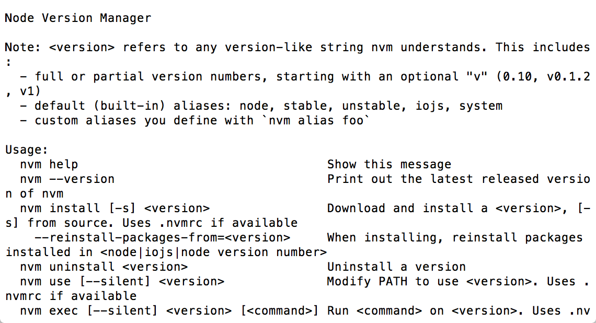
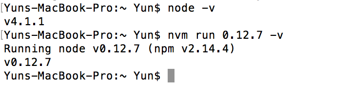

Node.js 安裝與設定
本篇將講解如何在各個不同OS建立NodeJS 環境，目前NodeJS在不同作業系統中可以直接使用指令快速架設。以下各不同作業系統解說如何安裝NodeJS與nvm。
What's nvm
nvm是一種Node.js的版本管理工具，在現在Node.js已經分成了stable跟develop，適時的切換版本是必須的。因為你有可能需要預先開發develop上的功能，但還是要維護stable上的bug， 且你使用nvm切換版本時npm也會一併安裝或切換。
Linux
在這裡我們不使用手動安裝，而是使用nvm自帶的install script
可以使用curl
curl -o- https://raw.githubusercontent.com/creationix/nvm/v0.29.0/install.sh | bash
或者Wget
wget -qO- https://raw.githubusercontent.com/creationix/nvm/v0.29.0/install.sh | bash
來執行這些install script，安裝完以後請重新連結你的vps或者重開你的server
手動安裝請依照參考資料裡nvm的github尋找Manual install的標題依序做下去(不推薦)
安裝完成後可以打
nvm
會顯示下面圖片：

OSX
OSX同樣可以用curl or wget的install script來安裝(同上)，homebrew也可以，但我並不推薦，所以不再撰述。
Windows
windows上並不支援nvm，但是有其他人開發了如nvmw、nvm-windows等來支援windows，這邊我們選擇star數比較多的nvm-windows來講解
installer link:https://github.com/coreybutler/nvm-windows/releases 選擇最新版nvm-setup.zip進行下載，解壓縮開了以後選擇nvm-setup.exe進行安裝，遵循指示下一步即可。
注意更新的時候只要重複安裝的步驟，安裝目錄選擇一樣就好。
nvm指令簡介
這些nvm的指令皆可在https://github.com/creationix/nvm裡找到
- install
nvm install 4.2.1
nvm install stable
這個指令是使用Node.js必須先做的，因為在安裝完nvm後Node.js並沒有被安裝。 你可以看到他可以帶兩種參數，一個是版本號、一個是stable or unstable。
版本號除了第一位必填以外，其他都選填，沒填的情況下會自動抓該版本下最新的。 EX:nvm install 4會安裝4.2.1
stable or unstable一個是安裝穩定版、一個是安裝最新版，不過就現在而言兩者是一樣的(2015-10-14)。
- use
npm use 4.2.1
npm use stable
此指令會切換node的版本，你可以在cmd或者terminal打：
node -v
查看現在版本，參數的設定同install。
- run
nvm run 4.2.1 [node file or node command]
nvm run stable [node file or node command]
要求nvm以特定版本運行node file或者node command，在測試ES6跟非ES6的code此功能十分重要。 此功能不會影響你本機裡的版本
EX:假設妳現在系統版本是4.1.1

由圖可以知道run的版本不受到現在系統版本的影響
- ls
nvm ls
nvm ls-remote
ls可以讓你查看"本地端"安裝的所有版本 ls-remote可以讓你查看，現在官方放出的所有版本。
- 設定node預設使用版本
nvm alias default stable
nvm alias default 4.2.1
此指令可以讓你設定每次開啟terminal的node預設版本是多少
結語
nvm是每個開發者都需要學習的東西，我建議務必做一遍，而不要從官網上下載檔案來安裝。